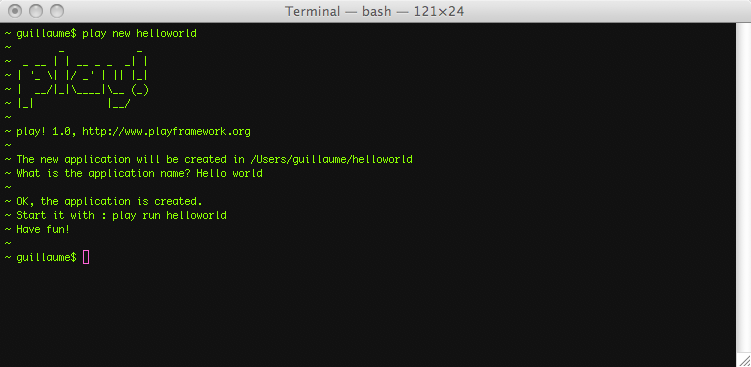
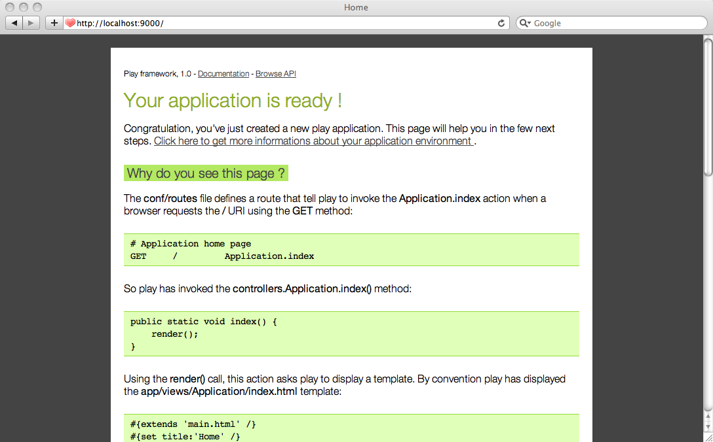
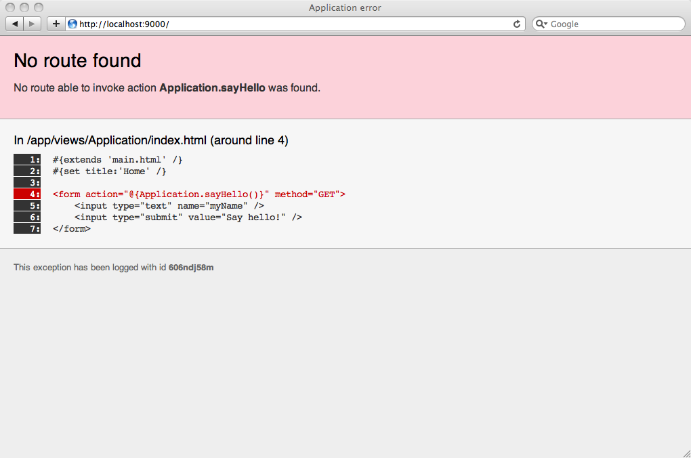
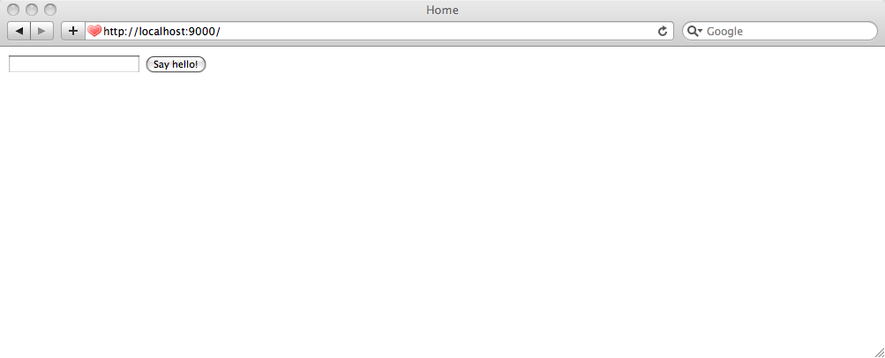
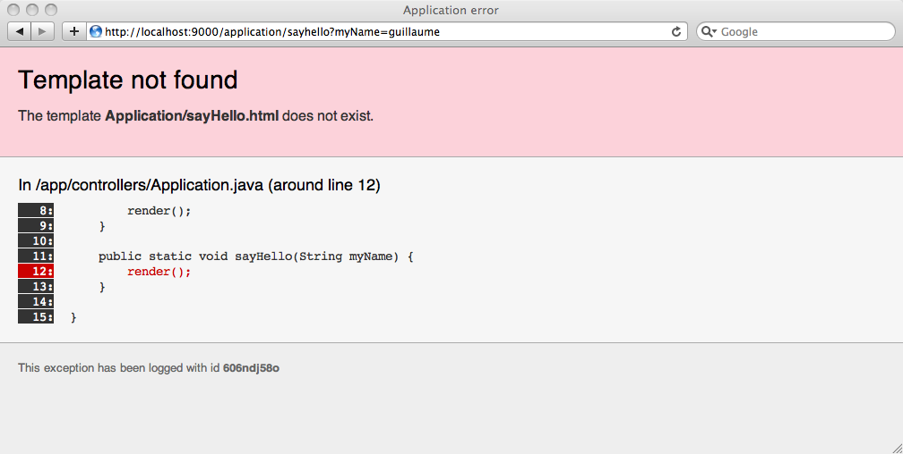
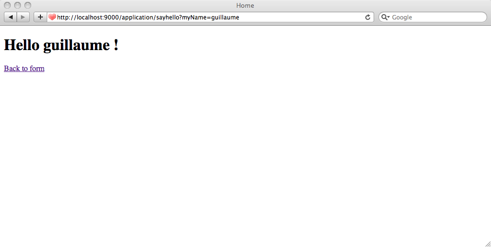
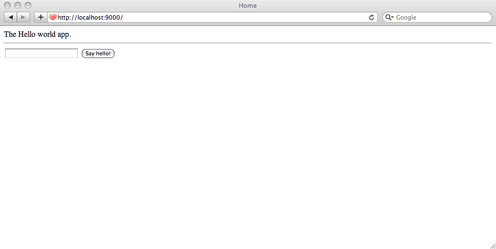
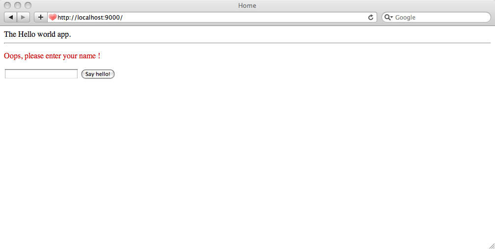
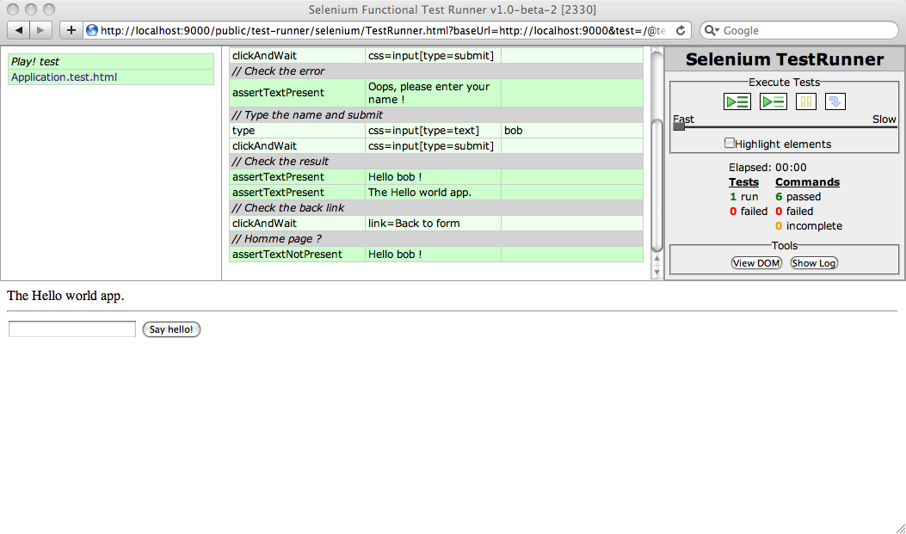

‘Hello World’ tutorial — Your first Play application
A very simple tutorial, that will just help you to discover the Play framework with the famous ‘Hello World’ example.
Prerequisites
First of all, make sure that you have a working Java installation. Play requires Java 5 or later.
As we will use the command line a lot, it’s better to use a Unix-like OS. If you run a Windows system, it will also work fine; you’ll just have to type a few commands in the command prompt.
You will of course need a text editor. If you are accustomed to use a full featured Java IDE like Eclipse or Netbeans you can of course use it. However with Play you can have fun working with a simple text editor like Textmate, Emacs or VI. This is because the framework manages the compilation and the deployment process itself. We will soon see that…
Installing the Play framework
Installation is very simple. Just download the latest binary package from the download page and unzip it to any path.
If you’re using Windows, it is generally a good idea to avoid space characters in the path, so for example c:\Play would be a better choice than c:\Documents And Settings\user\play.
To work efficiently, you need to add the Play directory to your working path. It allows to type just play at the command prompt to use the Play utility. To check that the installation worked, just open a new command line and type play; it should show you the Play basic usage help.
Project creation
Now that Play is correctly installed, it’s time to create the hello world application. Creating a Play application is pretty easy and fully managed by the Play command line utility. That allows for standard project layouts between all Play applications.
Open a new command line and type:
~$ play new helloworld
It will prompt you for the application full name. Type Hello world.

The play new command creates a new directory helloworld/ and populates it with a series of files and directories, the most important being:
app/ contains the application’s core, split between models, controllers and views directories. It can contain other Java package as well. This is the directory where .java source files live.
conf/ contains all the application’s configuration files, especially the main application.conf file, the routes definition files and the messages files used for internationalization.
lib/ contains all optional Java libraries packaged as standard .jar files.
public/ contains all the publicly available resources, which includes JavaScript, stylesheets and images directories.
test/ contains all the application tests. Tests are written either as Java JUnit tests or as Selenium tests.
Because Play uses UTF-8 as single encoding, it’s very important that all text files hosted in these directories are encoded using this charset. Make sure to configure your text editor accordingly.
Now if you’re a seasoned Java developer, you may wonder where all the .class files go. The answer is nowhere: Play doesn’t use any class files but reads the Java source files directly. Under the hood we use the Eclipse compiler to compile Java sources on the fly.
That allows two very important things in the development process. The first one is that Play will detect changes you make to any Java source file and automatically reload them at runtime. The second is that when a Java exception occurs, Play will create better error reports showing you the exact source code.
Running the application
We can now test the newly-created application. Just return to the command line, go to the newly-created helloworld/ directory and type play run. Play will now load the application and start a Web server on port 9000.
You can see the new application by opening a browser to http://localhost:9000. A new application has a standard welcome page that just tells you that it was successfully created.

Let’s see how the new application can display this page.
The main entry point of your application is the conf/routes file. This file defines all of the application’s accessible URLs. If you open the generated routes file you will see this first ‘route’:
GET / Application.index
That simply tells Play that when the web server receives a GET request for the / path, it must call the Application.index Java method. In this case, Application.index is a shortcut for controllers.Application.index, because the controllers package is implicit.
When you create standalone Java applications you generally use a single entry point defined by a method such as:
public static void main(String[] args) {
...
}
A Play application has several entry points, one for each URL. We call these methods action methods. Action methods are defined in special classes that we call controllers.
Let’s see how the controllers.Application controller looks like. Open the helloworld/app/controllers/Application.java source file:
package controllers;
import play.mvc.*;
public class Application extends Controller {
public static void index() {
render();
}
}
You see that controller classes extend the play.mvc.Controller class. This class provides all useful methods for controllers, like the render() method we use in the index action.
The index action is defined as a public static void method. This is how action methods are defined. You can see that action methods are static, because the controller classes are never instantiated. They are marked public to authorize the framework to call them in response of a URL. They always return void.
The default index action is simple: it calls the render() method which tells Play to render a template. Using a template is the most common way (but not the only one) to generate the HTTP response.
Templates are simple text files that live in the /app/views directory. Because we didn’t specify a template, the default one for this action will be used: Application/index.html
To see what the template looks like, open the helloworld/app/views/Application/index.html file:
#{extends 'main.html' /}
#{set title:'Home' /}
#{welcome /}
The template content seems pretty light. In fact, all you see are Play tags. Play tags are very close to JSP taglib. This is the #{welcome /} tag that generates the welcome message you’ve seen in the browser.
The #{extends /} tags tells Play that this template inherits another template called main.html. Template inheritance is a powerful concept that allows to create complex web pages by reusing common parts.
Open the helloworld/app/views/main.html template:
<!DOCTYPE html>
<html>
<head>
<title>#{get 'title' /}</title>
<meta http-equiv="Content-Type" content="text/html; charset=utf-8"/>
<link rel="stylesheet" type="text/css" media="screen"
href="@{'/public/stylesheets/main.css'}" />
<link rel="shortcut icon" type="image/png"
href="@{'/public/images/favicon.png'}" />
</head>
<body>
#{doLayout /}
</body>
</html>
Can you see the #{doLayout /} tag? This is where the content of Application/index.html will be inserted.
Creating the form
We will start the ‘Hello World’ application with a form where you can enter your name.
Edit the helloworld/app/views/Application/index.html template:
#{extends 'main.html' /}
#{set title:'Home' /}
<form action="@{Application.sayHello()}" method="GET">
<input type="text" name="myName" />
<input type="submit" value="Say hello!" />
</form>
Note that we use GET as form submission method, because the form submission does not have any side effect and is idempotent.
We use the @{…} notation to ask Play to automatically generate the URL able to invoke the Application.sayHello action. Now, refresh the home page in the browser.

Oops, you get an error. This is because you reference the non-existent action Application.sayHello. Let’s create it in the helloworld/app/controllers/Application.java file:
package controllers;
import play.mvc.*;
public class Application extends Controller {
public static void index() {
render();
}
public static void sayHello(String myName) {
render(myName);
}
}
We have declared the myName parameter in the action method signature, so it will automatically be filled with the value of the HTTP myName parameter, coming from the form submission. And we call render to just display a template; as we pass the myName variable to the render() call, this one will be available from the template.

Now, if you try to enter your name and submit the form, you will get another error:

The error is pretty clear. Play tries to render the default template for this action method, but it doesn’t exist. Let’s create it in the file helloworld/app/views/Application/sayHello.html:
#{extends 'main.html' /}
#{set title:'Home' /}
<h1>Hello ${myName ?: 'guest'}!</h1>
<a href="@{Application.index()}">Back to form</a>
You can refresh the page.

Look how we have used Groovy’s ?: operator. It switches to a default value if the myName variable is not filled. So if you try to submit the form without entering any name, it will display ‘Hello guest’.
Providing a better URL
Well, if you look at the submission URL, you will see something like:
http://localhost:9000/application/sayhello?myName=guillaume
It is not very pretty. This is because Play used the default ‘catch all’ route.
* /{controller}/{action} {controller}.{action}
We can have a better URL by specifying a custom path for the Application.sayHello action. Edit the helloworld/conf/routes file and add this route after the first one:
GET /hello Application.sayHello
Now go back to the form and submit it again to check that it uses the new URL pattern.
Customizing the layout
As both templates that the application use so far inherit from the same main.html template, you can easily add a custom layout. Edit the helloworld/app/views/main.html file:
...
<body>
The Hello world app.
<hr/>
#{doLayout /}
</body>
...
Now we have a common header for both pages.

Adding validation
We will add a little validation to the form, to make the name field required. We can use the Play validation framework to do that.
Edit the helloworld/app/controllers/Application.java controller, and the sayHello action:
...
public static void sayHello(@Required String myName) {
if(validation.hasErrors()) {
flash.error("Oops, please enter your name!");
index();
}
render(myName);
}
...
And don’t forget to import the play.data.validation.* package to get the @Required annotation. Play will automatically check that the myName field is filled or will add an error object to the errors scope. Then if there is any error, we add a message to the flash scope and redirect to the index action.
The flash scope allows to keep messages during action redirection.
Now you just have to display the error message if any. Edit the helloworld/app/views/Application/index.html:
#{extends 'main.html' /}
#{set title:'Home' /}
#{if flash.error}
<p style="color:#c00">
${flash.error}
</p>
#{/if}
<form action="@{Application.sayHello()}" method="GET">
<input type="text" name="myName" />
<input type="submit" value="Say hello!" />
</form>
And check that it works:

Writing an automated test suite
We will finish by writing a test for the application. As there is no Java logic to test, we need to test the Web application itself. So we will write a Selenium test.
First, you need to run your application in test mode. Stop the application and restart it with the test command:
$ play test
The play test command is almost the same as play run, except that it loads a test runner module that allows to run test suite directly from a browser.
Open a browser to the http://localhost:9000/@tests URL to see the test runner. Try to select all the default tests and run them; all should be green… But these default tests don’t really test anything.
A selenium test suite is typically written as an HTML file. The HTML syntax required by selenium is a little tedious (formatted using an HTML table element) to write. The good news is that Play will help you to generate it using the Play template engine and a set of tags that support a simplified syntax for selenium scenarios.
The default test suite of a newly created Play application already contains a selenium test. Open the helloworld/test/Application.test.html file:
*{ You can use plain selenium command using the selenium tag }*
#{selenium}
// Open the home page, and check that no error occurred
open('/')
assertNotTitle('Application error')
#{/selenium}
This test should run without any problem with the application for now. It just opens the home page and checks that the page content does not contain the ‘Application error’ text.
Let’s write a test for our application. Edit the test content:
#{selenium}
// Open the home page, and check that no error occurred
open('/')
assertNotTitle('Application error')
// Check that it is the Hello World application
assertTextPresent('The Hello world app.')
// Submit the form
clickAndWait('css=input[type=submit]')
// Check the error
assertTextPresent('Oops, please enter your name!')
// Type the name and submit
type('css=input[type=text]', 'bob')
clickAndWait('css=input[type=submit]')
// Check the result
assertTextPresent('Hello bob!')
assertTextPresent('The Hello world app.')
// Check the back link
clickAndWait('link=Back to form')
// Home page?
assertTextNotPresent('Hello bob!')
#{/selenium}
We have fully tested the application. Just select this test in the test runner and click ‘Start’. Everything should be green!

Learn more
This was a very simple tutorial about a very dumb application. If you want to learn more about Play, you can now check out the Play tutorial.